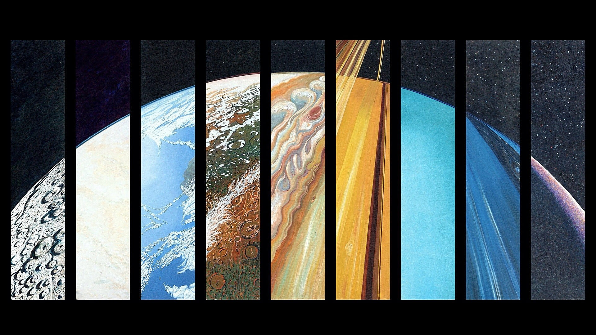
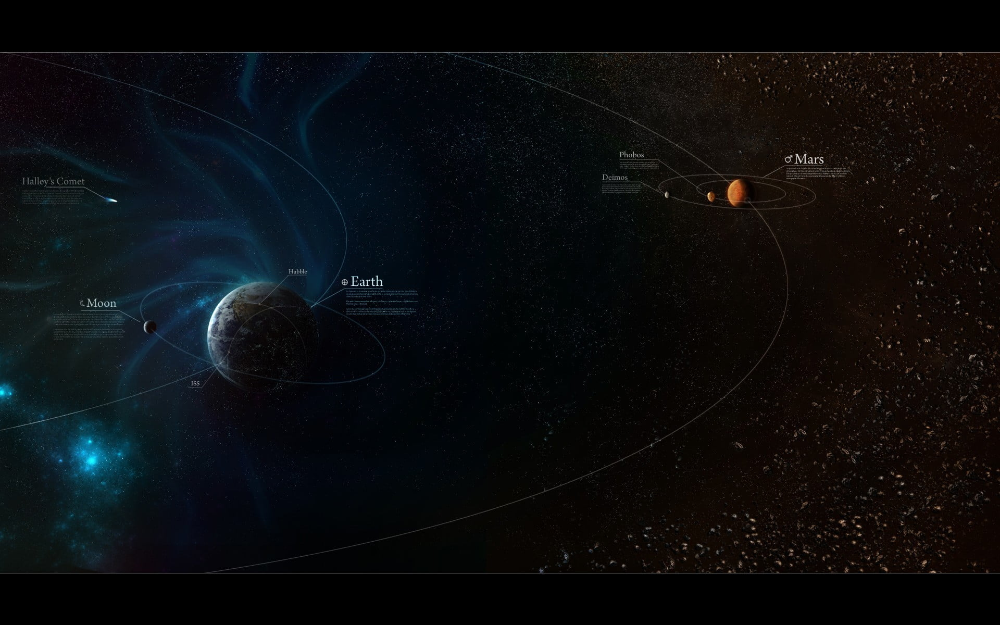

solar system

Общие характеристики
-
возраст: 4,5682±0,0006 млрд лет
-
расположение: местная группа галактик
-
масса: 1,0014 M☉
-
ближайшая звезда: проксима Центавра (4,21—4,24 св. лет)
Планетная система
-
Самая отдалённая планета от Солнца: Нептун (4,503 млрд км, 30,1 а.е.)
-
Расстояние до пояса Койпера: ~30—50 а.е.
-
Количество звёзд: 1 (Солнце)
-
Количество известных планет: 8

Структура
Центральным объектом Солнечной системы является Солнце — звезда главной последовательности спектрального класса
G2V, жёлтый карлик. В Солнце сосредоточена подавляющая часть всей массы системы (около 99,866 %), оно удерживает
своим тяготением планеты и прочие тела, принадлежащие к Солнечной системе[21]. Четыре крупнейших объекта — газовые
гиганты — составляют 99 % оставшейся массы (при этом большая часть приходится на Юпитер и Сатурн — около 90 %).
Большинство крупных объектов, обращающихся вокруг Солнца, движутся практически в одной плоскости, называемой
плоскостью эклиптики. В то же время кометы и объекты пояса Койпера часто обладают большими углами наклона к этой
плоскости.
Все планеты и большинство других объектов обращаются вокруг Солнца в одном направлении с вращением Солнца (против
часовой стрелки, если смотреть со стороны северного полюса Солнца). Есть исключения, такие как комета Галлея. Самой
большой угловой скоростью обладает Меркурий — он успевает совершить полный оборот вокруг Солнца всего за 88 земных
суток. А для самой удалённой планеты — Нептуна — период обращения составляет 165 земных лет.
Бо́льшая часть планет вращается вокруг своей оси в ту же сторону, что и обращается вокруг Солнца. Исключения
составляют Венера и Уран, причём Уран вращается практически «лёжа на боку» (наклон оси около 90°). Для наглядной
демонстрации вращения используется специальный прибор — теллурий.
Многие модели Солнечной системы условно показывают орбиты планет через равные промежутки, однако в
действительности, за малым исключением, чем дальше планета или пояс от Солнца, тем больше расстояние между её
орбитой и орбитой предыдущего объекта. Например, Венера приблизительно на 0,33 а.е. дальше от Солнца, чем Меркурий,
в то время как Сатурн на 4,3 а.е. дальше Юпитера, а Нептун на 10,5 а.е. дальше Урана. Были попытки вывести
корреляции между орбитальными расстояниями (например, правило Тициуса — Боде)[24], но ни одна из теорий не стала
общепринятой.
Орбиты объектов вокруг Солнца описываются законами Кеплера. Согласно им, каждый объект обращается по эллипсу, в
одном из фокусов которого находится Солнце. У более близких к Солнцу объектов (с меньшей большой полуосью) больше
угловая скорость вращения, поэтому короче период обращения (год). На эллиптической орбите расстояние объекта от
Солнца изменяется в течение его года. Ближайшая к Солнцу точка орбиты объекта называется перигелий, наиболее
удалённая — афелий. Каждый объект движется быстрее всего в своём перигелии и медленнее всего в афелии. Орбиты планет
близки к кругу, но многие кометы, астероиды и объекты пояса Койпера имеют сильно вытянутые эллиптические орбиты.
Большинство планет Солнечной системы обладают собственными подчинёнными системами. Многие окружены спутниками,
некоторые из спутников по размеру превосходят Меркурий. Большинство крупных спутников находятся в синхронном
вращении, одна их сторона постоянно обращена к планете. Четыре крупнейшие планеты — газовые гиганты — обладают также
кольцами, тонкими полосами крошечных частиц, обращающимися по очень близким орбитам практически в унисон.

Cостав
-
Солнце — звезда Солнечной системы и её главный компонент. Его масса (332 900 масс Земли)[39] достаточно
велика для поддержания термоядерной реакции в его недрах[40], при которой высвобождается большое количество
энергии, излучаемой в пространство в основном в виде электромагнитного излучения, максимум которого приходится
на диапазон длин волн 400—700 нм, соответствующий видимому свету.

-
Меркурий является ближайшей планетой к Солнцу и наименьшей планетой системы (0,055 массы Земли). У
планеты нет спутников. Характерными деталями рельефа его поверхности, помимо ударных кратеров, являются
многочисленные лопастевидные уступы, простирающиеся на сотни километров. Считается, что они возникли в
результате приливных деформаций на раннем этапе истории планеты во время, когда периоды обращения Меркурия
вокруг оси и вокруг Солнца не вошли в резонанс[64].
Меркурий имеет крайне разреженную атмосферу, она состоит из
атомов, «выбитых» с поверхности планеты солнечным ветром[65]. Относительно большое железное ядро Меркурия и
его
тонкая кора ещё не получили удовлетворительного объяснения. Имеется гипотеза, предполагающая, что внешние слои
планеты, состоящие из лёгких элементов, были сорваны в результате гигантского столкновения, в результате
которого размеры планеты уменьшились.
-
Меркурий имеет крайне разреженную атмосферу, она состоит из
атомов, «выбитых» с поверхности планеты солнечным ветром[65]. Относительно большое железное ядро Меркурия и
его
тонкая кора ещё не получили удовлетворительного объяснения. Имеется гипотеза, предполагающая, что внешние слои
планеты, состоящие из лёгких элементов, были сорваны в результате гигантского столкновения, в результате
которого размеры планеты уменьшились.
- Земля
- Марс
- Юпитер
- Сатурн
- Уран
- Нептун